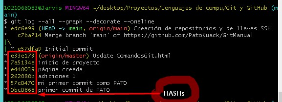
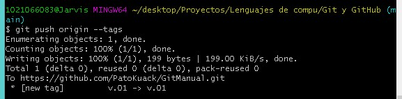
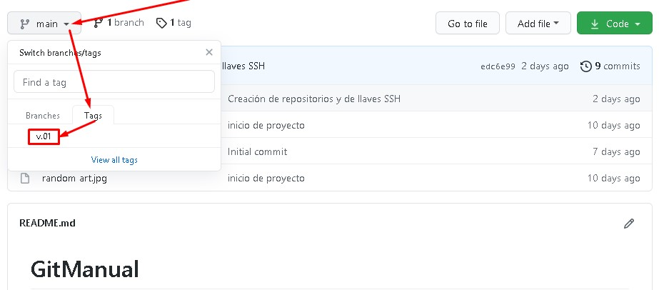
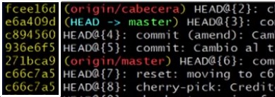

Se abre Git Bash y se posiciona en la carpeta raíz del proyecto, es decir, en la carpeta que contiene todos los archivos del proyecto y ya posicionada la terminal en esa carpeta se utiliza git con los siguientes comandos:
Comandos principales.
git init
Inicializa el repositorio. Con este comando se crea la carpeta .git.
Presionando esta tecla o mandando un q, se puede salir de un estado para volver a escribir código.
git clone URL_del_servidor_remoto
Permite descargar los archivos de la última versión de la rama principal y todo el historial de cambios en la carpeta .git de un repositorio ajeno o remoto.
git add
git add ___.txt
Agrega el archivo o sus cambios al repositorio (en la memoria RAM). se prepara para ingresarse a la base de datos.
git add .
Agrega todos los cambios que se hayan hecho a los archivos de la carpeta en donde se está posicionado.
git commit
git commit
Envía los últimos cambios del archivo a la base de datos del sistema de control de versiónes para controlar los cambios que se le hayan hecho. *Cada que se agregan (add) archivos se tiene que enviar los cambios a la base de datos (commit). Si no se le agrega mensaje se abre un VIN donde se coloca el mensaje con CTRL+i y se finaliza el VIN con ESC seguido de SHIFT + Z y por último se repite SHIFT + Z.
git commit -m "mensaje"
La "-m" indica que se le agregará un mensaje para poder verlo en el futuro como una referencia del cambio.
git commit -am "mensaje"
Hace un add junto con el commit y el mensaje, solo se debe utilizar con archivos que ya hayan sido ejecutados con un "git add" previamente, es decir, no funciona para archivos recién creados.
git commit --amend
Incluye un cambio hecho al proyecto al último commit hecho, pero se debe de hacer un "add" antes de usar este commit. También esta instrucción da la opción de modificar el mensaje del commit en el que se guardarán estos últimos cambios.
*No se utiliza con commits que ya estén en el repositorio remoto.
git push
Luego de hacer git add y git commit debemos ejecutar este comando para mandar los cambios al servidor remoto.
*Los archivos binarios no se deben agregar al repositorio debido a que lo hacen más pesado.
git fetch
Lo usamos para traer actualizaciones del servidor remoto y guardarlas en nuestro repositorio local (se ejecuta antes del git push).
git merge nombre_de_la_rama
Usamos este comando con servidores remotos. Lo necesitamos para combinar los últimos cambios del servidor remoto y nuestro directorio de trabajo. Se debe posicionar en la rama a la que se le quieren fusionar los cambios (generalmente se posiciona en la rama principal, o sea main) y en el comando se coloca el nombre de la rama que se le quiere combinar.
git pull
Básicamente, git fetch y git merge al mismo tiempo.
git branch
git branch
Muestra todas las ramas existentes en el proyecto de git.
git branch o git branch -l
Muestra una lista de todas las ramas que existen.
git branch nombre_de_la_rama
Crea una rama del proyecto con el nombre especificado. Esta rama contendrá una copia del último commit.
git branch -d nombre_de_la_rama
Elimina la rama especificada (con '-d' se fuerza el borrado).
git branch -m nombreRamaVieja nombreRamaNueva
Renombra una rama colocando el nombre de la rama actual y el nombre por el que se desea cambiarla.
git show-branch
Muestra las ramas que existen y cuál ha sido su historia dentro del proyecto.
git show-branch --all
Muestra un poco de más información.
gitk
Muestra de una forma visual toda la historia del proyecto.
git checkout
(Se deben guardar los cambios correspondientes en el repositorio actual antes de cambiar de versión del commit o de rama).
git checkout id-commit archivo.txt
Nos devuelve el archivo especificado a la versión de commit especificada. Si se hace un commit en este estado se borrará todo lo creado después de esta versión.
git checkout main archivo.txt
nos devuelve la última versión del archivo especificado.
git checkout nombre_de_la_rama
Nos mueve a la rama especificada.
git checkout -b nombre_de_la_rama
Crea una nueva rama con el nombre especificado y nos posiciona en ella.
git remote
git remote
Muestra el tipo de repositorio que tenemos disponibles.
git remote -v
Muestra el tipo de repositorio disponible, su URL y las acciones que se pueden hacer con él como usar fetch (importar proyectos) o push (exportar proyectos).
git remote add origin URL_(HTTPS_o_SSH)
Agrega un origen remoto de nuestros archivos.
git pull
git pull origin main
Importa a nuestro "origin" los cambios de la rama "main" (repositorio en GitHub).
Es importante hacer un pull antes de modificar el proyecto para evitar modificar de forma local algo que haya sido modificado en el repositorio remoto y que esto pueda causar conflictos.
git pull origin main --allow-unrelated-histories
Permite fusionar la rama (o branch) remota con la rama (o branch) local (generalmente se usa este comando la primera vez que se hace pull).
git pull rama_local main
Importa a una rama local el contenido que hay en la rama "main".
git push origin main
Exporta o envía nuestro "origin" la rama "main" de GitHub.
* Es una buena práctica siempre utilizar pull antes de editar cualquier cosa del proyecto para evitar conflictos o antes de hacer un push.
cd ~
La "~" (alt+126) nos dirige al home
*Se crea una llave SSH por cada computadora.
Los tags o etiquetas nos permiten asignar versiónes a los commits con cambios más importantes o significativos de nuestro proyecto. Son útiles en el sitio web de GitHub porque es la forma en que otros usuarios pueden visualizar que versiones ocurrieron y rara vez son útiles dentro del proyecto ya que solo se usarían para dejar un registro interno.

Primero se escoje y se copia uno de los hash's que se desea usar para crear el tag.
git tag
git tag
Muestra los tags que existen en el proyecto.
git tag -a nombre_del_tag -m "mensaje descriptivo del tag" hash
"-a" indica que se agregará un tag.
Generalmente se le coloca un nombre como v0.1 (versión 0.1 del proyecto).
git show-ref --tag
Muestra a que hash o a que commit está conectado un tag.
Como los tags no son archivos no se envían con un simple push.
git pull origin main
Como buena práctica, antes de subir a la web un tag, se obtiene el repositorio de GitHub.
git push origin --tags
Le envía a origin los tags creados.
git tag -d nombre_del_tag
Elimina un tag del proyecto en git (no de GitHub).
git push origin :refs/tags/nombre_del_tag
Elimina el tag de GitHub que está conectado con el tag eliminado dentro del proyecto en git (puede que previamente se tenga que usar pull y push para subir la referencia del tag eliminado en el proyecto de git).


Supresiones.
git rm
git rm --cached
Elimina los archivos del área de Staging y del próximo commit pero los mantiene en nuestro disco duro.
git rm --cached __.txt
Elimina el archivo del repositorio antes de que ingrese a la base de datos.
git rm --force
Elimina los archivos de Git y del disco duro. Git siempre guarda todo, por lo que podemos acceder al registro de la existencia de los archivos, de modo que podremos recuperarlos si es necesario (pero debemos usar comandos más avanzados).
git reset
Con ayuda de "git reflog" se obtiene el hash o id de cada commit o cambio en el proyecto:

git reset --soft
Borramos todo el historial y los registros de Git pero guardamos los cambios que tengamos en Staging, así podemos aplicar las últimas actualizaciones a un nuevo commit.
git reset id-commit --soft
Se posiciona en la versión especificada y elimina las versiónes posteriores a esa del repositorio.
git reset --hard
Borra todo. Todo todito, absolutamente todo. Toda la información de los commits y del área de staging, se borra el historial.
git reset --hard id-commit
Restaura los documentos a la versión especificada del repositorio y elimina las versiónes posteriores de git y del disco duro.
*Es una mala práctica.
git reset HEAD
Este es el comando para sacar archivos del área de Staging. No para borrarlos ni nada de eso, solo para que los últimos cambios de estos archivos no se envíen al último commit, a menos que cambiemos de opinión y los incluyamos de nuevo en staging con git add, por supuesto.
Monitoreo:
git status
Muestra el estatus de los cambios hechos, se usa para verificar los cambios.
git show
git show
Muestra todos los cambios históricos hechos, cuando y quien hizo los cambios. También muestra a que apunta el HEAD (principalmente solo a 'main')
git show __.txt
Muestra los cambios de un archivo especifico.
git log
git log ___.txt
Muestra el historial completo del archivo.
git log --stat
Muestra los cambios específicos realizados en los archivos a partir del commit.
git log --all
Muestra todo lo hecho históricamente.
git log --all --graph
Muestra por medio de unas líneas en el margen lateral como han funcionado las ramas.
git log --all --graph --decorate --oneline
Muestra toda la historia del proyecto desde que se inicializa.
git log --oneline
Muestra el historial de cambios en una forma reducida.
git reflog
Muestra toda la actividad que ha tenido el proyecto.
git diff
git diff
Muestra los cambios entre los cambios guardados en la memoria RAM y los guardados en el disco duro.